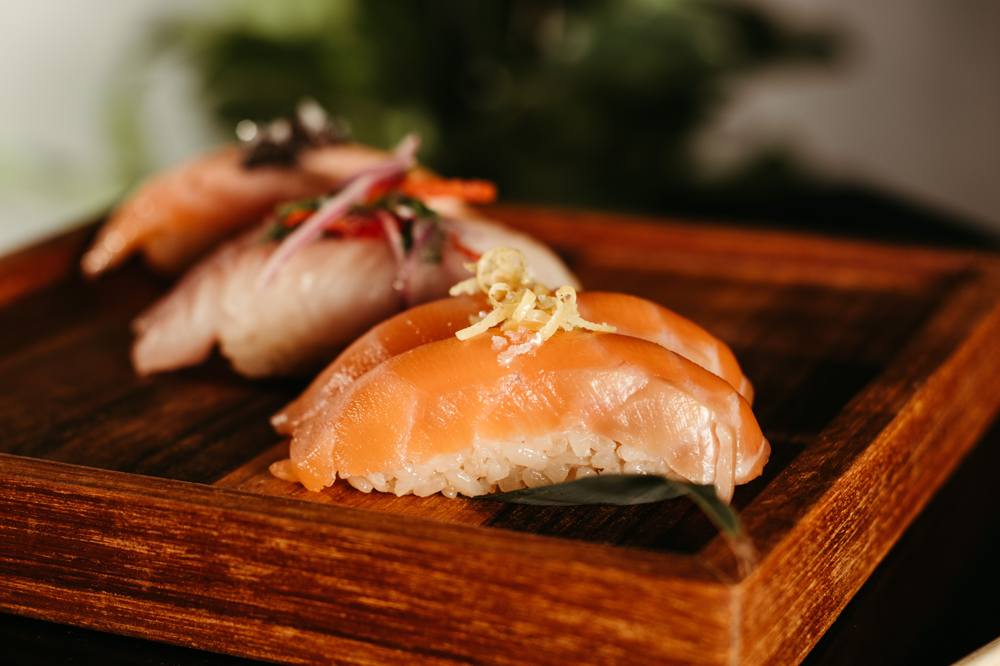

Discover Sushi with Confidence
A simple beginner's guide to sushi types, flavors, and ordering tips.
Get StartedExplore Sushi
Know the Basics
Learn the difference between nigiri, maki, and sashimi.
Find Your Flavor
Discover sushi options based on different tastes and preferences.
Order with Confidence
Learn simple tips for reading a sushi menu and choosing what to try.
Popular Sushi Types
Sushi comes in many different styles and flavors. Some popular choices for beginners include salmon nigiri, tuna nigiri, California rolls, spicy tuna rolls, and salmon avocado rolls.

Sushi Etiquette
Sushi can be enjoyed with chopsticks or with your hands. Use soy sauce lightly, and eat pickled ginger between different pieces of sushi to refresh your palate.
First-Time Sushi Tips
Start with familiar ingredients. Try cooked options if you are unsure about raw fish. Order a few different pieces to explore flavors. Ask about ingredients if you have food allergies.